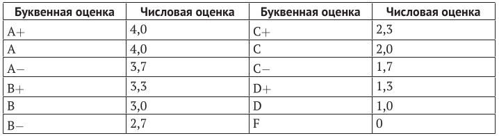

20. Числовые оценки – в буквенные. (в коде есть строки из следующих тем: "словари, циклы").
Условие:
В предыдущем упражнении мы переводили буквенные оценки студентов в числовые.
Сейчас перевернем ситуацию и попробуем определить буквенный номинал оценки по его числовому эквиваленту.
Убедитесь в том, что ваша программа будет обрабатывать числовые значения между указанными в предыдущей задаче.
В этом случае оценки должны быть округлены до ближайшей буквы.

Код:
estimation = {
"A": 4.0,
"A-": 3.7,
"B+": 3.3,
"B": 3.0,
"B-": 2.7,
"C+": 2.3,
"C": 2.0,
"C-": 1.7,
"D+": 1.3,
"D": 1.0,
"F": 0,
}
number = float(input("%100s" % "Введите числовую оценку в формате 1.1 (не более одно знака после запятой): "))
result = 0 # если переменная не изменится, то это запустит условие в будущем
if number >= estimation["A"]: # условие сразу выведет максимальный результат
result = "A"
elif number < 0:
result = "Введено отрицательное число" # условие выведет, если оценка меньше 0
else:
more = list() # здесь будут хранится оценки выше
less = list() # здесь будут хранится оценки ниже
for a, b in estimation.items():
if number == b: # условие выведет значение, если оно точно соответствует введённому
result = a
elif number < b:
more.append((a, b))
elif number > b:
less.append((a, b))
if result == 0:
diapazon = [less[0], more[-1]] # узкий диапазон оценок, их всего две, одна выше и другая ниже
delta = (int(diapazon[-1][-1] * 10) - int(diapazon[0][-1] * 10)) / 10 # почему такая сложная запись? Чтобы убрать неточность в числах float при расчёте дельты между максимальной и минимальной соседними оценками
delta_polovina = delta / 2
if number == ((diapazon[0][-1] * 10) + (delta_polovina * 10)) / 10:
result = diapazon[-1][0]
elif number > ((diapazon[0][-1] * 10) + (delta_polovina * 10)) / 10:
result = diapazon[-1][0]
else:
result = diapazon[0][0]
print("%99s" % "Буквенная оценка:", result)